翻译参考： https://github.com/maemual/raft-zh_cn/blob/master/raft-zh_cn.md
英文原文： In Search of an Understandable Consensus Algorithm
摘要
Raft 是一种为了管理复制日志的一致性算法。它提供了和 Paxos 算法相同的功能和性能，但是它的算法结构和 Paxos 不同，使得 Raft 算法更加容易理解并且更容易构建实际的系统。为了提升可理解性，Raft 将一致性算法分解成了几个关键模块，例如领导人选举、日志复制和安全性。同时它通过实施一个更强的一致性来减少需要考虑的状态的数量。由一个用户研究的结果可以证明，对于学生而言，Raft 算法比 Paxos 算法更加容易学习。Raft 算法还包括一个新的机制来允许集群成员的动态改变，它利用重叠的大多数来保证安全性。
介绍
一致性算法允许一组机器像一个整体一样工作，即使其中一些机器出现故障也能够继续工作下去。正因为如此，一致性算法在构建可信赖的大规模软件系统中扮演着重要的角色。在过去的 10 年里，Paxos 算法统治着一致性算法这一领域：绝大多数的实现都是基于 Paxos 或者受其影响。同时 Paxos 也成为了教学领域里讲解一致性问题时的示例。
但是不幸的是，尽管有很多工作都在尝试降低它的复杂性，但是 Paxos 算法依然十分难以理解。并且，Paxos 自身的算法结构需要进行大幅的修改才能够应用到实际的系统中。这些都导致了工业界和学术界都对 Paxos 算法感到十分头疼。
和 Paxos 算法进行过努力之后，我们开始寻找一种新的一致性算法，可以为构建实际的系统和教学提供更好的基础。我们的做法是不寻常的，我们的首要目标是可理解性：我们是否可以在实际系统中定义一个一致性算法，并且能够比 Paxos 算法以一种更加容易的方式来学习。此外，我们希望该算法方便系统构建者的直觉的发展。不仅一个算法能够工作很重要，而且能够显而易见的知道为什么能工作也很重要。
Raft 一致性算法就是这些工作的结果。在设计 Raft 算法的时候，我们使用一些特别的技巧来提升它的可理解性，包括算法分解（Raft 主要被分成了领导人选举，日志复制和安全三个模块）和减少状态机的状态（相对于 Paxos，Raft 减少了非确定性和服务器互相处于非一致性的方式）。一份针对两所大学 43 个学生的研究表明 Raft 明显比 Paxos 算法更加容易理解。在这些学生同时学习了这两种算法之后，和 Paxos 比起来，其中 33 个学生能够回答有关于 Raft 的问题。
Raft 算法在许多方面和现有的一致性算法都很相似（主要是 Oki 和 Liskov 的 Viewstamped Replication），但是它也有一些独特的特性：
- 强领导者：和其他一致性算法相比，Raft 使用一种更强的领导能力形式。比如，日志条目只从领导者发送给其他的服务器。这种方式简化了对复制日志的管理并且使得 Raft 算法更加易于理解。
- 领导选举：Raft 算法使用一个随机计时器来选举领导者。这种方式只是在任何一致性算法都必须实现的心跳机制上增加了一点机制。在解决冲突的时候会更加简单快捷。
- 成员关系变更：Raft 使用一种共同一致的方法来处理集群成员变换的问题，在这种方法下，处于调整过程中的两种不同的配置集群中大多数机器会有重叠，这就使得集群在成员变换的时候依然可以继续工作。
我们相信，Raft 算法不论出于教学目的还是作为实践项目的基础都是要比 Paxos 或者其他一致性算法要优异的。它比其他算法更加简单，更加容易理解；它的算法描述足以实现一个现实的系统；它有好多开源的实现并且在很多公司里使用；它的安全性已经被证明；它的效率和其他算法比起来也不相上下。
接下来，这篇论文会介绍以下内容：复制状态机问题（第 2 节），讨论 Paxos 的优点和缺点（第 3 节），讨论我们为了理解能力而使用的方法（第 4 节），阐述 Raft 一致性算法（第 5-8 节），评价 Raft 算法（第 9 节），以及一些相关的工作（第 10 节）。
复制状态机
一致性算法是从复制状态机的背景下提出的。在这种方法中，一组服务器上的状态机产生相同状态的副本，并且在一些机器宕掉的情况下也可以继续运行。复制状态机在分布式系统中被用于解决很多容错的问题。例如，大规模的系统中通常都有一个集群领导者，像 GFS、HDFS 和 RAMCloud，并且系统使用一个独立的的复制状态机去管理领导选举和存储配置信息并且在领导人宕机的情况下也要存活下来。比如 Chubby 和 ZooKeeper。
复制状态机通常都是基于复制日志实现的，如图 1。每一个服务器存储一个包含一系列指令的日志，并且按照日志的顺序进行执行。每一个日志都按照相同的顺序包含相同的指令，所以每一个服务器都执行相同的指令序列。因为每个状态机都是确定的，每一次执行操作都产生相同的状态和同样的序列。
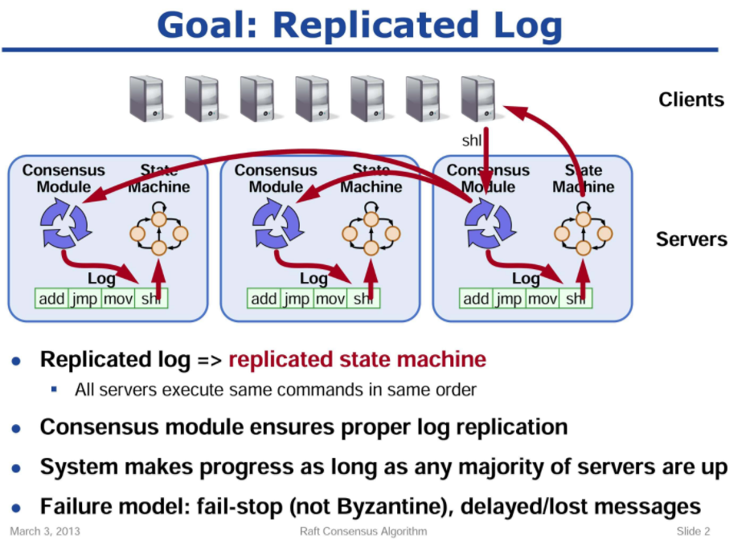
图 1 ：复制状态机的结构。一致性算法管理着来自客户端指令的复制日志。状态机从日志中处理相同顺序的相同指令，所以产生的结果也是相同的。
保证复制日志相同就是一致性算法的工作了。在一台服务器上，一致性模块接收客户端发送来的指令然后增加到自己的日志中去。它和其他服务器上的一致性模块进行通信来保证每一个服务器上的日志最终都以相同的顺序包含相同的请求，尽管有些服务器会宕机。一旦指令被正确的复制，每一个服务器的状态机按照日志顺序处理他们，然后输出结果被返回给客户端。因此，服务器集群看起来形成一个高可靠的状态机。
实际系统中使用的一致性算法通常含有以下特性：
- 安全性保证（绝对不会返回一个错误的结果）：在非拜占庭错误情况下，包括网络延迟、分区、丢包、冗余和乱序等错误都可以保证正确。
- 可用性：集群中只要有大多数的机器可运行并且能够相互通信、和客户端通信，就可以保证可用。因此，一个典型的包含 5 个节点的集群可以容忍两个节点的失败。服务器被停止就认为是失败。他们当有稳定的存储的时候可以从状态中恢复回来并重新加入集群。
- 不依赖时序来保证一致性：物理时钟错误或者极端的消息延迟在可能只有在最坏情况下才会导致可用性问题。
- 通常情况下，一条指令可以尽可能快的在集群中大多数节点响应一轮远程过程调用时完成。小部分比较慢的节点不会影响系统整体的性能。
Paxos算法的问题
略
为了可理解性的设计
设计 Raft 算法我们有几个初衷：它必须提供一个完整的实际的系统实现基础，这样才能大大减少开发者的工作；它必须在任何情况下都是安全的并且在大多数的情况下都是可用的；并且它的大部分操作必须是高效的。但是我们最重要也是最大的挑战是可理解性。它必须保证对于普遍的人群都可以十分容易的去理解。另外，它必须能够让人形成直观的认识，这样系统的构建者才能够在现实中进行必然的扩展。
在设计 Raft 算法的时候，有很多的点需要我们在各种备选方案中进行选择。在这种情况下，我们评估备选方案基于可理解性原则：解释各个备选方案有多大的难度（例如，Raft 的状态空间有多复杂，是否有微妙的暗示）？对于一个读者而言，完全理解这个方案和暗示是否容易？
我们意识到对这种可理解性分析上具有高度的主观性；尽管如此，我们使用了两种通常适用的技术来解决这个问题。第一个技术就是众所周知的问题分解：只要有可能，我们就将问题分解成几个相对独立的，可被解决的、可解释的和可理解的子问题。例如，Raft 算法被我们分成领导人选举，日志复制，安全性和角色改变几个部分。
我们使用的第二个方法是通过减少状态的数量来简化需要考虑的状态空间，使得系统更加连贯并且在可能的时候消除不确定性。特别的，所有的日志是不允许有空洞的，并且 Raft 限制了日志之间变成不一致状态的可能。尽管在大多数情况下我们都试图去消除不确定性，但是也有一些情况下不确定性可以提升可理解性。尤其是，随机化方法增加了不确定性，但是他们有利于减少状态空间数量，通过处理所有可能选择时使用相似的方法。我们使用随机化去简化 Raft 中领导人选举算法。
Raft 一致性算法
Raft 是一种用来管理章节 2 中描述的复制日志的算法。图 2 为了参考之用，总结这个算法的简略版本，图 3 列举了这个算法的一些关键特性。图中的这些元素会在剩下的章节逐一介绍。
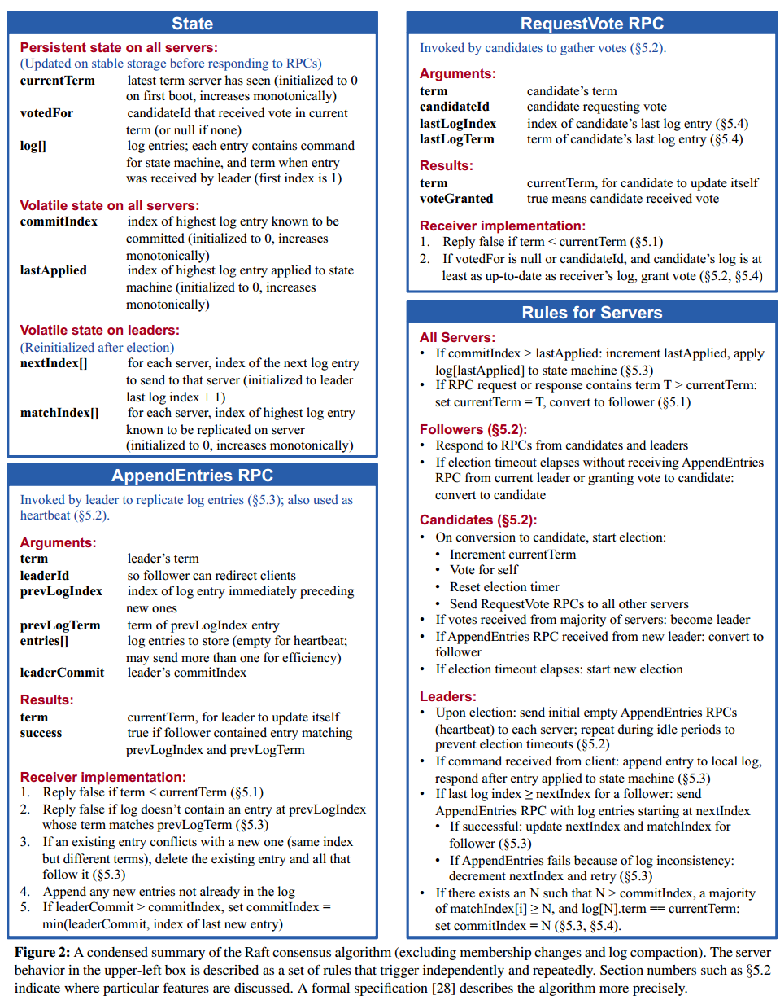
Raft 通过选举一个高贵的领导人，然后给予他全部的管理复制日志的责任来实现一致性。领导人从客户端接收日志条目，把日志条目复制到其他服务器上，并且当保证安全性的时候告诉其他的服务器应用日志条目到他们的状态机中。拥有一个领导人大大简化了对复制日志的管理。例如，领导人可以决定新的日志条目需要放在日志中的什么位置而不需要和其他服务器商议，并且数据都从领导人流向其他服务器。一个领导人可以宕机，可以和其他服务器失去连接，这时一个新的领导人会被选举出来。
通过领导人的方式，Raft 将一致性问题分解成了三个相对独立的子问题，这些问题会在接下来的子章节中进行讨论：
- 领导选举：一个新的领导人需要被选举出来，当现存的领导人宕机的时候（章节 5.2）
- 日志复制：领导人必须从客户端接收日志然后复制到集群中的其他节点，并且强制要求其他节点的日志保持和自己相同。
- 安全性：在 Raft 中安全性的关键是在下表中展示的状态机安全：如果有任何的服务器节点已经应用了一个确定的日志条目到它的状态机中，那么其他服务器节点不能在同一个日志索引位置应用一个不同的指令。章节 5.4 阐述了 Raft 算法是如何保证这个特性的；这个解决方案涉及到一个额外的选举机制（5.2 节）上的限制。
| 特性 | 解释 |
|---|---|
| 选举安全特性 Election Safety | 对于一个给定的任期号，最多只会有一个领导人被选举出来（5.2 节） |
| 领导人只附加原则 Leader Append-Only | 领导人绝对不会删除或者覆盖自己的日志，只会增加（5.3 节） |
| 日志匹配原则 Log Mactching | 如果两个日志在相同的索引位置的日志条目的任期号相同，那么我们就认为这个日志从头到这个索引位置之间全部完全相同（5.3 节） |
| 领导人完全特性 Leader Completeness | 如果某个日志条目在某个任期号中已经被提交，那么这个条目必然出现在更大任期号的所有领导人中（5.4 节） |
| 状态机安全特性 State Machine Safety | 如果一个领导人已经在给定的索引值位置的日志条目应用到状态机中，那么其他任何的服务器在这个索引位置不会提交一个不同的日志（5.4.3 节） |
在展示一致性算法之后，这一章节会讨论可用性的一些问题和系统中的时序的规则的问题。
Raft 基础
一个 Raft 集群包含若干个服务器节点；通常是 5 个，这允许整个系统容忍 2 个节点的失效。在任何时刻，每一个服务器节点都处于这三个状态之一：领导人、跟随者或者候选人。在通常情况下，系统中只有一个领导人并且其他的节点全部都是跟随者。跟随者都是被动的：他们不会发送任何请求，只是简单的响应来自领导者或者候选人的请求。领导人处理所有的客户端请求（如果一个客户端和跟随者联系，那么跟随者会把请求重定向给领导人）。第三种状态，候选人，是用来在 5.2 节描述的选举新领导人时使用。图 4 展示了这些状态和他们之前转换关系；这些转换关系会在接下来进行讨论。
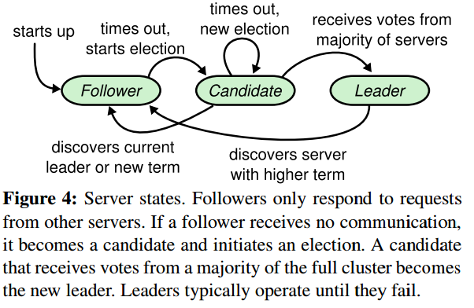
Raft 把时间分割成任意长度的任期，如图 5。任期用连续的整数标记。每一段任期从一次选举开始，就像章节 5.2 描述的一样，一个或者多个候选人尝试成为领导者。如果一个候选人赢得选举，然后他就在接下来的任期内充当领导人的职责。在某些情况下，一次选举过程会造成选票的瓜分。在这种情况下，这一任期会以没有领导人结束；一个新的任期（和一次新的选举）会很快重新开始。Raft 保证了在一个给定的任期内，最多只有一个领导者。
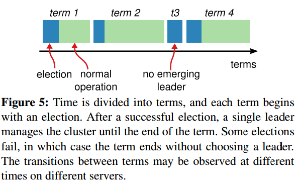
不同的服务器节点可能多次观察到任期之间的转换，但在某些情况下，一个节点也可能观察不到任何一次选举或者整个任期全程。任期在 Raft 算法中充当逻辑时钟的作用，这会允许服务器节点查明一些过期的信息比如陈旧的领导者。每一个节点存储一个当前任期号，这一编号在整个时期内单调的增长。当服务器之间通信的时候会交换当前任期号；如果一个服务器的当前任期号比其他人小，那么他会更新自己的编号到较大的编号值。如果一个候选人或者领导者发现自己的任期号过期了，那么他会立即恢复成跟随者状态。如果一个节点接收到一个包含过期的任期号的请求，那么他会直接拒绝这个请求。
单单任期比较小不能决定它是过期的，同时还要判断lastLogIndex和lastLogTerm
Raft 算法中服务器节点之间通信使用远程过程调用（RPCs），并且基本的一致性算法只需要两种类型的 RPCs。请求投票（RequestVote） RPCs 由候选人在选举期间发起（章节 5.2），然后附加条目（AppendEntries）RPCs 由领导人发起，用来复制日志和提供一种心跳机制（章节 5.3）。第 7 节为了在服务器之间传输快照增加了第三种 RPC。当服务器没有及时的收到 RPC 的响应时，会进行重试， 并且他们能够并行的发起 RPCs 来获得最佳的性能。
领导人选举
Raft 使用一种心跳机制来触发领导人选举。当服务器程序启动时，他们都是跟随者身份。一个服务器节点继续保持着跟随者状态直到他从领导人或者候选者处接收到有效的 RPCs。领导者周期性的向所有跟随者发送心跳包（即不包含日志项内容的附加日志项 RPCs）来维持自己的权威。如果一个跟随者在一段时间里没有接收到任何消息，也就是选举超时，那么他就会认为系统中没有可用的领导者,并且发起选举以选出新的领导者。
当服务器程序启动时，他们都是跟随者身份。然后最早超时醒来的节点发起RequestVote，如果成功获得大多数选票则成为Leader
要开始一次选举过程，跟随者先要增加自己的当前任期号并且转换到候选人状态。然后他会并行的向集群中的其他服务器节点发送请求投票的 RPCs 来给自己投票。候选人会继续保持着当前状态直到以下三件事情之一发生：(a) 他自己赢得了这次的选举，(b) 其他的服务器成为领导者，(c) 一段时间之后没有任何一个获胜的人。这些结果会分别的在下面的段落里进行讨论。
当一个候选人从整个集群的大多数服务器节点获得了针对同一个任期号的选票，那么他就赢得了这次选举并成为领导人。每一个服务器最多会对一个任期号投出一张选票，按照先来先服务的原则（注意：5.4 节在投票上增加了一点额外的限制）。要求大多数选票的规则确保了最多只会有一个候选人赢得此次选举（图 3 中的选举安全性）。一旦候选人赢得选举，他就立即成为领导人。然后他会向其他的服务器发送心跳消息来建立自己的权威并且阻止新的领导人的产生。
在等待投票的时候，候选人可能会从其他的服务器接收到声明它是领导人的附加日志项 RPC。如果这个领导人的任期号（包含在此次的 RPC中）不小于候选人当前的任期号，那么候选人会承认领导人合法并回到跟随者状态。 如果此次 RPC 中的任期号比自己小，那么候选人就会拒绝这次的 RPC 并且继续保持候选人状态。
第三种可能的结果是候选人既没有赢得选举也没有输：如果有多个跟随者同时成为候选人，那么选票可能会被瓜分以至于没有候选人可以赢得大多数人的支持。当这种情况发生的时候，每一个候选人都会超时，然后通过增加当前任期号来开始一轮新的选举。然而，没有其他机制的话，选票可能会被无限的重复瓜分。
Raft 算法使用随机选举超时时间的方法来确保很少会发生选票瓜分的情况，就算发生也能很快的解决。为了阻止选票起初就被瓜分，选举超时时间是从一个固定的区间（例如 150-300毫秒）随机选择。这样可以把服务器都分散开以至于在大多数情况下只有一个服务器会选举超时；然后他赢得选举并在其他服务器超时之前发送心跳包。同样的机制被用在选票瓜分的情况下。每一个候选人在开始一次选举的时候会重置一个随机的选举超时时间，然后在超时时间内等待投票的结果；这样减少了在新的选举中另外的选票瓜分的可能性。9.3 节展示了这种方案能够快速的选出一个领导人。
领导人选举这个例子,体现了可理解性原则是如何指导我们进行方案设计的。起初我们计划使用一种排名系统：每一个候选人都被赋予一个唯一的排名，供候选人之间竞争时进行选择。如果一个候选人发现另一个候选人拥有更高的排名，那么他就会回到跟随者状态，这样高排名的候选人能够更加容易的赢得下一次选举。但是我们发现这种方法在可用性方面会有一点问题（如果高排名的服务器宕机了，那么低排名的服务器可能会超时并再次进入候选人状态。而且如果这个行为发生得足够快，则可能会导致整个选举过程都被重置掉）。我们针对算法进行了多次调整，但是每次调整之后都会有新的问题。最终我们认为随机重试的方法是更加明显和易于理解的。
日志复制
一旦一个领导人被选举出来，他就开始为客户端提供服务。客户端的每一个请求都包含一条被复制状态机执行的指令。领导人把这条指令作为一条新的日志条目附加到日志中去，然后并行的发起附加条目 RPCs 给其他的服务器，让他们复制这条日志条目。当这条日志条目被安全的复制（下面会介绍），领导人会应用这条日志条目到它的状态机中然后把执行的结果返回给客户端。如果跟随者崩溃或者运行缓慢，再或者网络丢包，领导人会不断的重复尝试附加日志条目 RPCs （尽管已经回复了客户端）直到所有的跟随者都最终存储了所有的日志条目。
日志以图 6 展示的方式组织。每一个日志条目存储一条状态机指令和从领导人收到这条指令时的任期号。日志中的任期号用来检查是否出现不一致的情况，同时也用来保证图 3 中的某些性质。每一条日志条目同时也都有一个整数索引值来表明它在日志中的位置。
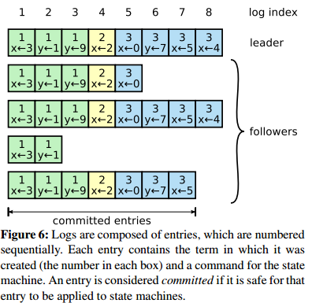
领导人来决定什么时候把日志条目应用到状态机中是安全的；这种日志条目被称为已提交。Raft 算法保证所有已提交的日志条目都是持久化的并且最终会被所有可用的状态机执行。在领导人将创建的日志条目复制到大多数的服务器上的时候，日志条目就会被提交（例如在图 6 中的条目 7）。同时，领导人的日志中之前的所有日志条目也都会被提交，包括由其他领导人创建的条目。5.4 节会讨论某些当在领导人改变之后应用这条规则的隐晦内容，同时他也展示了这种提交的定义是安全的。领导人跟踪了最大的将会被提交的日志项的索引，并且索引值会被包含在未来的所有附加日志 RPCs （包括心跳包），这样其他的服务器才能最终知道领导人的提交位置。一旦跟随者知道一条日志条目已经被提交，那么他也会将这个日志条目应用到本地的状态机中（按照日志的顺序）。
我们设计了 Raft 的日志机制来维护一个不同服务器的日志之间的高层次的一致性。这么做不仅简化了系统的行为也使得更加可预计，同时他也是安全性保证的一个重要组件。Raft 维护着以下的特性，这些同时也组成了图 3 中的日志匹配特性：
- 如果在不同的日志中的两个条目拥有相同的索引和任期号，那么他们存储了相同的指令。
- 如果在不同的日志中的两个条目拥有相同的索引和任期号，那么他们之前的所有日志条目也全部相同。
第一个特性来自这样的一个事实，领导人最多在一个任期里在指定的一个日志索引位置创建一条日志条目，同时日志条目在日志中的位置也从来不会改变。加上一个任期内只有一个Leader。第二个特性由附加日志 RPC 的一个简单的一致性检查所保证。
一致性检查：在发送附加日志 RPC 的时候，领导人会把新的日志条目紧接着之前的条目的索引位置和任期号包含在里面。如果跟随者在它的日志中找不到包含相同索引位置和任期号的条目，那么他就会拒绝接收新的日志条目。
一致性检查就像一个归纳步骤：一开始空的日志状态肯定是满足日志匹配特性的，然后一致性检查保护了日志匹配特性当日志扩展的时候。因此，每当附加日志 RPC 返回成功时，领导人就知道跟随者的日志一定是和自己相同的了。
在正常的操作中，领导人和跟随者的日志保持一致性，所以附加日志 RPC 的一致性检查从来不会失败。然而，领导人崩溃的情况会使得日志处于不一致的状态（老的领导人可能还没有完全复制所有的日志条目）。这种不一致问题会在领导人和跟随者的一系列崩溃下加剧。图 7 展示了跟随者的日志可能和新的领导人不同的方式。跟随者可能会丢失一些在新的领导人中有的日志条目，他也可能拥有一些领导人没有的日志条目，或者两者都发生。丢失或者多出日志条目可能会持续多个任期。
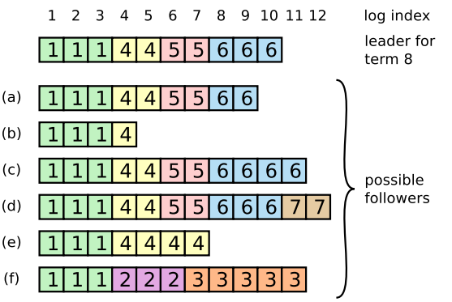
图 7：当一个领导人成功当选时，跟随者可能是任何情况（a-f）。每一个盒子表示是一个日志条目；里面的数字表示任期号。跟随者可能会缺少一些日志条目（a-b），可能会有一些未被提交的日志条目（c-d），或者两种情况都存在（e-f）。例如，场景 f 可能会这样发生，某服务器在任期 2 的时候是领导人，已附加了一些日志条目到自己的日志中，但在提交之前就崩溃了；很快这个机器就被重启了，在任期 3 重新被选为领导人，并且又增加了一些日志条目到自己的日志中；在任期 2 和任期 3 的日志被提交之前，这个服务器又宕机了，并且在接下来的几个任期里一直处于宕机状态。
在 Raft 算法中，领导人处理不一致是通过强制跟随者直接复制自己的日志来解决了。这意味着在跟随者中的冲突的日志条目会被领导人的日志覆盖。5.4 节会阐述如何通过增加一些限制来使得这样的操作是安全的。
要使得跟随者的日志进入和自己一致的状态，领导人必须找到最后两者达成一致的地方，然后删除从那个点之后的所有日志条目，发送自己的日志给跟随者。所有的这些操作都在进行附加日志 RPCs 的一致性检查时完成。领导人针对每一个跟随者维护了一个 nextIndex，这表示下一个需要发送给跟随者的日志条目的索引地址。当一个领导人刚获得权力的时候，他初始化所有的 nextIndex 值为自己的最后一条日志的index加1（图 7 中的 11）。如果一个跟随者的日志和领导人不一致，那么在下一次的附加日志 RPC 时的一致性检查就会失败。在被跟随者拒绝之后，领导人就会减小 nextIndex 值并进行重试。最终 nextIndex 会在某个位置使得领导人和跟随者的日志达成一致。当这种情况发生，附加日志 RPC 就会成功，这时就会把跟随者冲突的日志条目全部删除并且加上领导人的日志。一旦附加日志 RPC 成功，那么跟随者的日志就会和领导人保持一致，并且在接下来的任期里一直继续保持。
如果需要的话，算法可以通过减少被拒绝的附加日志 RPCs 的次数来优化。例如，当附加日志 RPC 的请求被拒绝的时候，跟随者可以返回包含冲突的条目的任期号和自己存储的那个任期的最早的索引地址。借助这些信息，领导人可以减小 nextIndex 越过所有那个任期冲突的所有日志条目；这样就变成每个任期需要一次附加条目 RPC 而不是每个条目一次。在实践中，我们十分怀疑这种优化是否是必要的，因为失败是很少发生的并且也不大可能会有这么多不一致的日志。
通过这种机制，领导人在获得权力的时候就不需要任何特殊的操作来恢复一致性。他只需要进行正常的操作，然后日志就能自动的在回复附加日志 RPC 的一致性检查失败的时候自动趋于一致。领导人从来不会覆盖或者删除自己的日志（图 3 的领导人只附加特性）。
日志复制机制展示出了第 2 节中形容的一致性特性：Raft 能够接受，复制并应用新的日志条目只要大部分的机器是工作的；在通常的情况下，新的日志条目可以在一次 RPC 中被复制给集群中的大多数机器；并且单个的缓慢的跟随者不会影响整体的性能。
安全性
前面的章节里描述了 Raft 算法是如何选举和复制日志的。然而，到目前为止描述的机制并不能充分的保证每一个状态机会按照相同的顺序执行相同的指令。例如，一个跟随者可能会进入不可用状态同时领导人已经提交了若干的日志条目，然后这个跟随者可能会被选举为领导人并且覆盖这些日志条目；因此，不同的状态机可能会执行不同的指令序列。
这一节通过在领导选举的时候增加一些限制来完善 Raft 算法。这一限制保证了任何的领导人对于给定的任期号，都拥有了之前任期的所有被提交的日志条目（图 3 中的领导人完整特性）。增加这一选举时的限制，我们对于提交时的规则也更加清晰。最终，我们将展示对于领导人完整特性的简要证明，并且说明领导人是如何领导复制状态机的做出正确行为的。
选举限制
在任何基于领导人的一致性算法中，领导人都必须存储所有已经提交的日志条目。在某些一致性算法中，例如 Viewstamped Replication，某个节点即使是一开始并没有包含所有已经提交的日志条目，它也能被选为领导者。这些算法都包含一些额外的机制来识别丢失的日志条目并把他们传送给新的领导人，要么是在选举阶段要么在之后很快进行。不幸的是，这种方法会导致相当大的额外的机制和复杂性。Raft 使用了一种更加简单的方法，它可以保证所有之前的任期号中已经提交的日志条目在选举的时候都会出现在新的领导人中，不需要传送这些日志条目给领导人。这意味着日志条目的传送是单向的，只从领导人传给跟随者，并且领导人从不会覆盖自身本地日志中已经存在的条目。
Raft 使用投票的方式来阻止一个候选人赢得选举除非这个候选人包含了所有已经提交的日志条目。候选人为了赢得选举必须联系集群中的大部分节点，这意味着每一个已经提交的日志条目在这些服务器节点中肯定存在于至少一个节点上。如果候选人的日志至少和大多数的服务器节点一样新（这个新的定义会在下面讨论），那么他一定持有了所有已经提交的日志条目。请求投票 RPC 实现了这样的限制： RPC 中包含了候选人的日志信息，然后投票人会拒绝掉那些日志没有自己新的投票请求。（并更新自己的任期）
Raft 通过比较两份日志中最后一条日志条目的索引值和任期号定义谁的日志比较新。如果两份日志最后的条目的任期号不同，那么任期号大的日志更加新。如果两份日志最后的条目任期号相同，那么日志比较长的那个就更加新。
先比较任期，后比较索引。
提交之前任期内的日志条目
如同 5.3 节介绍的那样，领导人知道一条当前任期内的日志记录是可以被提交的，只要它被存储到了大多数的服务器上。如果一个领导人在提交日志条目之前崩溃了，未来后续的领导人会继续尝试复制这条日志记录。然而，一个领导人不能断定一个之前任期里的日志条目被保存到大多数服务器上的时候就一定已经提交了。图 8 展示了一种情况，一条已经被存储到大多数节点上的老日志条目，也依然有可能会被未来的领导人覆盖掉。
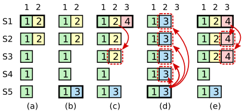
如图的时间序列展示了为什么领导人无法决定对老任期号的日志条目进行提交。在 (a) 中，S1 是领导者，部分的复制了索引位置 2 的日志条目。在 (b) 中，S1 崩溃了，然后 S5 在任期 3 里通过 S3、S4 和自己的选票赢得选举，然后从客户端接收了一条不一样的日志条目放在了索引 2 处。然后到 (c)，S5 又崩溃了；S1 重新启动，选举成功，开始复制日志。在这时，来自任期 2 的那条日志已经被复制到了集群中的大多数机器上，但是还没有被提交。如果 S1 在 (d) 中又崩溃了，S5 可以重新被选举成功（通过来自 S2，S3 和 S4 的选票），然后覆盖了他们在索引 2 处的日志。反之，如果在崩溃之前，S1 把自己主导的新任期里产生的日志条目复制到了大多数机器上，就如 (e) 中那样，那么在后面任期里面这些新的日志条目就会被提交（因为S5 就不可能选举成功）。 这样在同一时刻就同时保证了，之前的所有老的日志条目就会被提交。
为了消除图 8 里描述的情况，Raft 永远不会通过计算副本数目的方式去提交一个之前任期内的日志条目。只有领导人当前任期里的日志条目通过计算副本数目可以被提交；一旦当前任期的日志条目以这种方式被提交，那么由于日志匹配特性，之前的日志条目也都会被间接的提交。在某些情况下，领导人可以安全的知道一个老的日志条目是否已经被提交（例如，该条目是否存储到所有服务器上），但是 Raft 为了简化问题使用一种更加保守的方法。
当领导人复制之前任期里的日志时，Raft 会为所有日志保留原始的任期号, 这在提交规则上产生了额外的复杂性。在其他的一致性算法中，如果一个新的领导人要重新复制之前的任期里的日志时，它必须使用当前新的任期号。Raft 使用的方法更加容易辨别出日志，因为它可以随着时间和日志的变化对日志维护着同一个任期编号。另外，和其他的算法相比，Raft 中的新领导人只需要发送更少日志条目（其他算法中必须在他们被提交之前发送更多的冗余日志条目来为他们重新编号）。
安全性论证
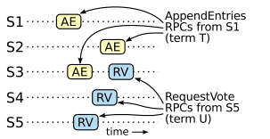
图 9：如果 S1 （任期 T 的领导者）提交了一条新的日志在它的任期里，然后 S5 在之后的任期 U 里被选举为领导人，然后至少会有一个机器，如 S3，既拥有来自 S1 的日志，也给 S5 投票了。
在给定了完整的 Raft 算法之后，我们现在可以更加精确的讨论领导人完整性特性（这一讨论基于 9.2 节的安全性证明）。我们假设领导人完全性特性是不存在的，然后我们推出矛盾来。假设任期 T 的领导人（领导人 T）在任期内提交了一条日志条目，但是这条日志条目没有被存储到未来某个任期的领导人的日志中。设大于 T 的最小任期 U 的领导人 U 没有这条日志条目。
- 在领导人 U 选举的时候一定没有那条被提交的日志条目（领导人从不会删除或者覆盖任何条目）。
- 领导人 T 复制这条日志条目给集群中的大多数节点，同时，领导人U 从集群中的大多数节点赢得了选票。因此，至少有一个节点（投票者、选民）同时接受了来自领导人T 的日志条目，并且给领导人U 投票了，如图 9。这个投票者是产生这个矛盾的关键。
- 这个投票者必须在给领导人 U 投票之前先接受了从领导人 T 发来的已经被提交的日志条目；否则他就会拒绝来自领导人 T 的附加日志请求（因为此时他的任期号会比 T 大）。
- 投票者在给领导人 U 投票时依然保有这条日志条目，因为任何中间的领导人都包含该日志条目（根据上述的假设），领导人从不会删除条目，并且跟随者只有和领导人冲突的时候才会删除条目。
- 投票者把自己选票投给领导人 U 时，领导人 U 的日志必须和投票者自己一样新。这就导致了两者矛盾之一。
- 首先，如果投票者和领导人 U 的最后一条日志的任期号相同，那么领导人 U 的日志至少和投票者一样长，所以领导人 U 的日志一定包含所有投票者的日志。这是另一处矛盾，因为投票者包含了那条已经被提交的日志条目，但是在上述的假设里，领导人 U 是不包含的。
- 除此之外，领导人 U 的最后一条日志的任期号就必须比投票人大了。此外，他也比 T 大，因为投票人的最后一条日志的任期号至少和 T 一样大（他包含了来自任期 T 的已提交的日志）。创建了领导人 U 最后一条日志的之前领导人一定已经包含了那条被提交的日志（根据上述假设，领导人 U 是第一个不包含该日志条目的领导人）。所以，根据日志匹配特性，领导人 U 一定也包含那条被提交当然日志，这里产生矛盾。
- 这里完成了矛盾。因此，所有比 T 大的领导人一定包含了所有来自 T 的已经被提交的日志。
- 日志匹配原则保证了未来的领导人也同时会包含被间接提交的条目，例如图 8 (d) 中的索引 2。
通过领导人完全特性，我们就能证明图 3 中的状态机安全特性，即如果已经服务器已经在某个给定的索引值应用了日志条目到自己的状态机里，那么其他的服务器不会应用一个不一样的日志到同一个索引值上。在一个服务器应用一条日志条目到他自己的状态机中时，他的日志必须和领导人的日志，在该条目和之前的条目上相同，并且已经被提交。现在我们来考虑在任何一个服务器应用一个指定索引位置的日志的最小任期；日志完全特性保证拥有更高任期号的领导人会存储相同的日志条目，所以之后的任期里应用某个索引位置的日志条目也会是相同的值。因此，状态机安全特性是成立的。
最后，Raft 要求服务器按照日志中索引位置顺序应用日志条目。和状态机安全特性结合起来看，这就意味着所有的服务器会应用相同的日志序列集到自己的状态机中，并且是按照相同的顺序。
跟随者和候选人崩溃
到目前为止，我们都只关注了领导人崩溃的情况。跟随者和候选人崩溃后的处理方式比领导人要简单的多，并且他们的处理方式是相同的。如果跟随者或者候选人崩溃了，那么后续发送给他们的 RPCs 都会失败。Raft 中处理这种失败就是简单的通过无限的重试；如果崩溃的机器重启了，那么这些 RPC 就会完整的成功。如果一个服务器在完成了一个 RPC，但是还没有响应的时候崩溃了，那么在他重新启动之后就会再次收到同样的请求。Raft 的 RPCs 都是幂等的，所以这样重试不会造成任何问题。例如一个跟随者如果收到附加日志请求但是他已经包含了这一日志，那么他就会直接忽略这个新的请求。
时间和可用性
Raft 的要求之一就是安全性不能依赖时间：整个系统不能因为某些事件运行的比预期快一点或者慢一点就产生了错误的结果。但是，可用性（系统可以及时的响应客户端）不可避免的要依赖于时间。例如，如果消息交换在服务器崩溃时花费更多的时间，候选人将不会等待太长的时间来赢得选举；没有一个稳定的领导人，Raft 将无法工作。
领导人选举是 Raft 中对时间要求最为关键的方面。Raft 可以选举并维持一个稳定的领导人,只要系统满足下面的时间要求：
广播时间（broadcastTime） << 选举超时时间（electionTimeout） << 平均故障间隔时间（MTBF）
在这个不等式中，广播时间指的是从一个服务器并行的发送 RPCs 给集群中的其他服务器并接收响应的平均时间；选举超时时间就是在 5.2 节中介绍的选举的超时时间限制；然后平均故障间隔时间就是对于一台服务器而言，两次故障之间的平均时间。广播时间必须比选举超时时间小一个量级，这样领导人才能够发送稳定的心跳消息来阻止跟随者开始进入选举状态；通过随机化选举超时时间的方法，这个不等式也使得选票瓜分的情况变得不可能。选举超时时间应该要比平均故障间隔时间小上几个数量级，这样整个系统才能稳定的运行。当领导人崩溃后，整个系统会大约相当于选举超时的时间里不可用；我们希望这种情况在整个系统的运行中很少出现。
广播时间和平均故障间隔时间是由系统决定的，但是选举超时时间是我们自己选择的。Raft 的 RPCs 需要接收方将信息持久化的保存到稳定存储中去，所以广播时间大约是 0.5 毫秒到 20 毫秒，取决于存储的技术。因此，选举超时时间可能需要在 10 毫秒到 500 毫秒之间。大多数的服务器的平均故障间隔时间都在几个月甚至更长，很容易满足时间的需求。
集群成员变化
到目前为止，我们都假设集群的配置（加入到一致性算法的服务器集合）是固定不变的。但是在实践中，偶尔是会改变集群的配置的，例如替换那些宕机的机器或者改变复制级别。尽管可以通过暂停整个集群，更新所有配置，然后重启整个集群的方式来实现，但是在更改的时候集群会不可用。另外，如果存在手工操作步骤，那么就会有操作失误的风险。为了避免这样的问题，我们决定自动化配置改变并且将其纳入到 Raft 一致性算法中来。
为了让配置修改机制能够安全，那么在转换的过程中不能够发生在同一个任期里，两个领导人同时被选举成功。不幸的是，任何服务器直接从旧的配置直接转换到新的配置的方案都是不安全的。一次性自动的转换所有服务器是不可能的，所以在转换期间整个集群存在划分成两个独立的大多数群体的可能性（见图 10）。
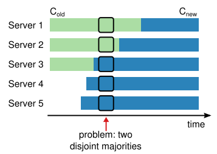
图 10：直接从一种配置转到新的配置是十分不安全的，因为各个机器可能在任何的时候进行转换。在这个例子中，集群配额从 3 台机器变成了 5 台。不幸的是，存在这样的一个时间点，两个不同的领导人在同一个任期里都可以被选举成功。一个是通过旧的配置，一个通过新的配置。
为了保证安全性，配置更改必须使用两阶段方法。目前有很多种两阶段的实现。例如，有些系统在第一阶段停掉旧的配置所以集群就不能处理客户端请求；然后在第二阶段在启用新的配置。在 Raft 中，集群先切换到一个过渡的配置，我们称之为共同一致 joint consensus；一旦共同一致已经被提交了，那么系统就切换到新的配置上。共同一致是老配置和新配置的结合：
- 日志条目被复制给集群中新、老配置的所有服务器。
- 新、旧配置的服务器都可以成为领导人。
- 达成一致（针对选举和提交）需要分别在两种配置上获得大多数的支持。
共同一致允许独立的服务器在不影响安全性的前提下，在不同的时间进行配置转换过程。此外，共同一致可以让集群在配置转换的过程任依然响应服务器请求。
下面中的集群配置包含哪些内容呢？
集群配置在复制日志中以特殊的日志条目来存储和通信；图 11 展示了配置转换的过程。当一个领导人接收到一个改变配置从 C-old 到 C-new 的请求，他会为了共同一致存储配置（图中的 C-old,new），以前面描述的日志条目和副本的形式（ it stores the configuration for joint consensus(C-old,new in the figure) as a log entry and replicates that entry using the mechanisms described previously. ）。一旦一个服务器将新的配置日志条目增加到它的日志中，他就会用这个配置来做出未来所有的决定（服务器总是使用最新的配置，无论他是否已经被提交）。这意味着领导人要使用 C-old,new 的规则来决定日志条目 C-old,new 什么时候需要被提交。如果领导人崩溃了，被选出来的新领导人可能是使用 C-old 配置也可能是 C-old,new 配置，这取决于赢得选举的候选人是否已经接收到了 C-old,new 配置。在任何情况下， C-new 配置在这一时期都不会单方面的做出决定。
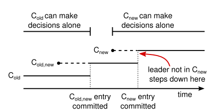
> 图 11：一个配置切换的时间线。虚线表示已经被创建但是还没有被提交的条目，实线表示最后被提交的日志条目。领导人首先创建了 C-old,new 的配置条目在自己的日志中，并提交到 C-old,new 中（C-old 的大多数和 C-new 的大多数）。然后他创建 C-new 条目并提交到 C-new 中的大多数。这样就不存在 C-new 和 C-old 可以同时做出决定的时间点。
一旦 C-old,new 被提交，那么无论是 C-old 还是 C-new，在没有经过他人批准的情况下都不可能做出决定，并且领导人完全特性保证了只有拥有 C-old,new 日志条目的服务器才有可能被选举为领导人。这个时候，领导人创建一条关于 C-new 配置的日志条目并复制给集群就是安全的了。再者，每个服务器在见到新的配置的时候就会立即生效。当新的配置在 C-new 的规则下被提交，旧的配置就变得无关紧要，同时不使用新的配置的服务器就可以被关闭了。如图 11，C-old 和 C-new 没有任何机会同时做出单方面的决定；这保证了安全性。
在关于重新配置还有三个问题需要提出。
1. 第一个问题是，新的服务器可能初始化没有存储任何的日志条目。当这些服务器以这种状态加入到集群中，那么他们需要一段时间来更新追赶，这时还不能提交新的日志条目。为了避免这种可用性的间隔时间，Raft 在配置更新的时候使用了一种额外的阶段，在这个阶段，新的服务器以没有投票权身份加入到集群中来（领导人复制日志给他们，但是不考虑他们是大多数）。一旦新的服务器追赶上了集群中的其他机器，重新配置可以像上面描述的一样处理。
2. 第二个问题是，集群的领导人可能不是新配置的一员。在这种情况下，领导人就会在提交了 C-new 日志之后退位（回到跟随者状态）。这意味着有这样的一段时间，领导人管理着集群，但是不包括他自己；他复制日志但是不把他自己算作是大多数之一。当 C-new 被提交时，会发生领导人过渡，因为这时是最早新的配置可以独立工作的时间点（将总是能够在 C-new 配置下选出新的领导人）。在此之前，可能只能从 C-old 中选出领导人。
3. 第三个问题是，移除不在 C-new 中的服务器可能会扰乱集群。这些服务器将不会再接收到心跳，所以当超时后，他们就会进行新的选举过程。他们会发送拥有新的任期号的请求投票 RPCs，这样会导致当前的领导人回退成跟随者状态。新的领导人最终会被选出来，但是被移除的服务器将会再次超时，然后这个过程会再次重复，导致整体可用性大幅降低。
为了避免这个问题，当服务器确认当前领导人存在时，服务器会忽略请求投票 RPCs。特别的，当服务器在当前最小选举超时时间内收到一个请求投票 RPC，他不会更新当前的任期号或者投出选票。这不会影响正常的选举，每个服务器在开始一次选举之前，至少等待一个最小选举超时时间。然而，这有利于避免被移除的服务器扰乱：如果领导人能够发送心跳给集群，那么他就不会被更大的任期号废黜。
对于问题2还是不理解，Leader为什么可能不是新配置的一员呢？问题3也不是很理解。
日志压缩
Raft 的日志在正常操作中不断的增长，但是在实际的系统中，日志不能无限制的增长。随着日志不断增长，他会占用越来越多的空间，花费越来越多的时间来重置。如果没有一定的机制去清除日志里积累的陈旧的信息，那么会带来可用性问题。
快照是最简单的压缩方法。在快照系统中，整个系统的状态都以快照的形式写入到稳定的持久化存储中，然后到那个时间点之前的日志全部丢弃。快照技术被使用在 Chubby 和 ZooKeeper 中，接下来的章节会介绍 Raft 中的快照技术。
增量压缩的方法，例如日志清理或者日志结构合并树，都是可行的。这些方法每次只对一小部分数据进行操作，这样就分散了压缩的负载压力。首先，他们先选择一个已经积累的大量已经被删除或者被覆盖对象的区域，然后重写那个区域还活跃的对象，之后释放那个区域。和简单操作整个数据集合的快照相比，需要增加复杂的机制来实现。状态机可以实现 LSM tree 使用和快照相同的接口，但是日志清除方法就需要修改 Raft 了。
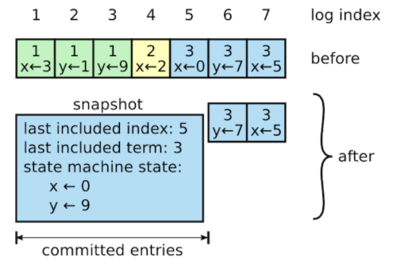
图 12：一个服务器用新的快照替换了从 1 到 5 的条目，快照值存储了当前的状态。快照中包含了最后的索引位置和任期号。
图 12 展示了 Raft 中快照的基础思想。每个服务器独立的创建快照，只包括已经被提交的日志。主要的工作包括将状态机的状态写入到快照中。Raft 也包含一些少量的元数据到快照中：
最后被包含索引指的是被快照取代的最后的条目在日志中的索引值（状态机最后应用的日志）
最后被包含的任期指的是该条目的任期号。保留这些数据是为了支持快照前的第一个条目的附加日志请求时的一致性检查，因为这个条目需要最后的索引值和任期号。为了支持集群成员更新（第 6 节），快照中也将最后的一次配置作为最后一个条目存下来。一旦服务器完成一次快照，他就可以删除最后索引位置之前的所有日志和快照了。
尽管通常服务器都是独立的创建快照，但是领导人必须偶尔的发送快照给一些落后的跟随者。这通常发生在当领导人已经丢弃了下一条需要发送给跟随者的日志条目的时候。幸运的是这种情况不是常规操作：一个与领导人保持同步的跟随者通常都会有这个条目。然而一个运行非常缓慢的跟随者或者新加入集群的服务器（第 6 节）将不会有这个条目。这时让这个跟随者更新到最新的状态的方式就是通过网络把快照发送给他们。
具体实现略 参照原文： https://github.com/maemual/raft-zh_cn/blob/master/raft-zh_cn.md
客户端交互
这一节将介绍客户端是如何和 Raft 进行交互的，包括客户端如何发现领导人和 Raft 是如何支持线性化语义的。这些问题对于所有基于一致性的系统都存在，并且 Raft 的解决方案和其他的也差不多。
Raft 中的客户端发送所有请求给领导人。当客户端启动的时候，他会随机挑选一个服务器进行通信。如果客户端第一次挑选的服务器不是领导人，那么那个服务器会拒绝客户端的请求并且提供他最近接收到的领导人的信息（附加条目请求包含了领导人的网络地址）。如果领导人已经崩溃了，那么客户端的请求就会超时；客户端之后会再次重试随机挑选服务器的过程。
我们 Raft 的目标是要实现线性化语义（每一次操作立即执行，只执行一次，在他调用和收到回复之间）。但是，如上述，Raft 是可以执行同一条命令多次的：例如，如果领导人在提交了这条日志之后，但是在响应客户端之前崩溃了，（为什么不先相应客户端再执行commit呢？）那么客户端会和新的领导人重试这条指令，导致这条命令就被再次执行了。解决方案就是客户端对于每一条指令都赋予一个唯一的序列号。然后，状态机跟踪每条指令最新的序列号和相应的响应。如果接收到一条指令，它的序列号已经被执行了，那么就立即返回结果，而不重新执行指令。
只读的操作可以直接处理而不需要记录日志。但是，在不增加任何限制的情况下，这么做可能会冒着返回脏数据的风险，因为领导人响应客户端请求时可能已经被新的领导人作废了，但是他还不知道。线性化的读操作必须不能返回脏数据，Raft 需要使用两个额外的措施在不使用日志的情况下保证这一点。
首先，领导人必须有关于被提交日志的最新信息。领导人完全特性保证了领导人一定拥有所有已经被提交的日志条目，但是在他任期开始的时候，他可能不知道那些是已经被提交的。为了知道这些信息，他需要在他的任期里提交一条日志条目。Raft 中通过领导人在任期开始的时候提交一个空白的没有任何操作的日志条目到日志中去来实现。
第二，领导人在处理只读的请求之前必须检查自己是否已经被废黜了（他自己的信息已经变脏了如果一个更新的领导人被选举出来）。Raft 中通过让领导人在响应只读请求之前，先和集群中的大多数节点交换一次心跳信息来处理这个问题。可选的，领导人可以依赖心跳机制来实现一种租约的机制，但是这种方法依赖时间来保证安全性（假设时间误差是有界的）。
算法实现和评估 相关工作 结论 感谢
略。